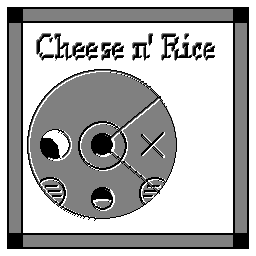
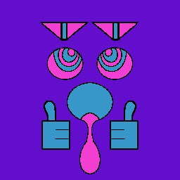
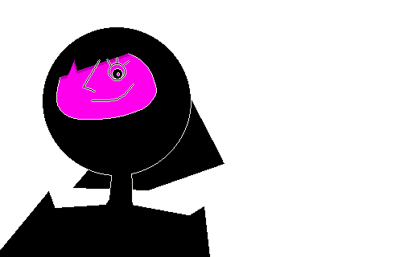
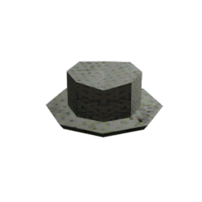
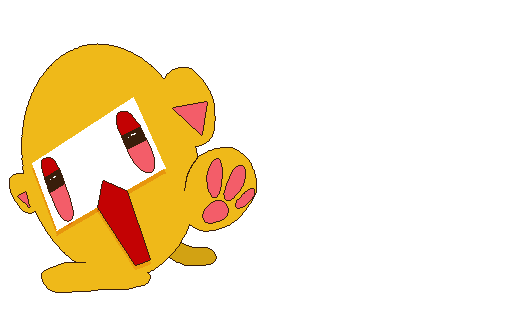

Before you is a realm of pretty cool stuff. No matter where your destiny takes you, I hope you find it enjoyable.
Got queries? Email me at supposedlyspooky@gmail.com
(9:00, 7/3/2023)
CRAB TRAP HOBAG IS OUT NOW!!!
I'm very, very excited to share my latest game project with you all : Crab Trap Hobag.
Explore a short game where you control the weather with your wrist watch and stamps you collect from the locals!
I hope you enjoy playing it!
It has been over a year since my last project was released - not for lack of trying though.
I've gone through many iterations of various projects over the past year and a half, and as much as I would like to say it is, it is not the culmination of a year and a half's work.
Rather it is a culmination of a year and a half's work in artistic and digital development, using a month long game jam as a structure to stand on.
If you liked Crab Trap Hobag, and want to show your support, feel free to adorn your site with this beautiful stamp :P
p.s.
Crab Trap Hobag OST is not currently released (more news on that soonish), but in the meantime, enjoy the inspo playlist I used to get a grip on the vibes I wanted for this game.
(11:34, 4/6/2023)
Supposedly Spooky is dead.
They have been replaced by Window Pane Membrane.
You will find them sufficient.
In reality I've been thinking for awhile that I wanted a little rebranding.
The name "Supposedly Spooky" always felt a little bland to me, not to mention it's a riff off one of the first names this account went under - supposedly_an_art_account.
And my profile picture is from my game that came out almost two years ago. So.
I hope this isn't too drastic of a change for people to realize it's still me, but I will have "formerly Supposedly Spooky" written in all of my bios for at least a few months for people late to the party.
This PSA was made possible by viewers like you.
Thank you!
(2:36 PM, 3/31/2023)

Long Time no see.
Sorry for the lack of frequent updates on... anything.
School is rough, and, of course, like everyone else, I have normal human responsibilities.
I've made a few changes around here to both update the appearance, and increase the functionality of this site.
If you are viewing on mobile (my condolences) you will not be able to see many of the changes, as they add to visual clutter.
* New music on some pages for silliness
* A status display widget in the top right corner - This will make it much easier to quickly share unimportant information
* A chat feature on the left navigation bar! Feel free to comment your favorite kind of ice cream!
I think that's about everything right now!
No promises on when the next update will be, but trust me when I say I'm working very hard!

(1:06 AM, 1/2/2023)
Happy
late
New Years!
This is the only piece of media that has ever gotten me to be passionate about new years.
May your new year be shrouded by a kinder presence than the last.

Howdy! Haven't been doing too much work, mostly just enjoying the tail end of my winter break playing Splatoon with friends.
One of my friends has been trying to get me into emulation for ages and I finally caved. I downloaded Rhythm Heaven Fever and Pokemon Platinum, both of which I was aware existed as a child via promotional material, but I'd never actually gotten to play either.
I am bad at both
Me and a friend were looking for obscure itch.io games yesterday and we stumbled upon Lets Go Baby Friends World, which I had heard of but never played.
We both loved the intentionally convoluted nature of the game and the style, and I think I'm gonna see if I can copy it a bit.
(11:52 PM, 22/24/2022)
I've spent the last three days animating a lemon creature and I had a dream about a lemon.

I'm taking a break from working on Burdock and I'm experimenting with a ENA-styled 3D game with 2D animated characters.
I know ENA has a lot of inspirations from LSD and Middens, but I don't know if the specific idea of 3D characters being
represented in 2D animations is something that Joel G just thought of, or if it has roots in some other game.
If you know, feel free to DM me because I'd like to trace back that idea as far as it goes.
^Lemons Salivated 267^
A childlike lemon
(12:00 PM, 12/23/2022)
In other news...
As of right now, the beta version of my game project is live in my Discord server. It's far from being done, but I'd love to hear what you think!
Version 1.2.2 Updates:
* New New Banner!
* New hotbar icons
* Changed some splatoon shrine stuff
* Dream Diary updated
* Button sidebar repurposed to house whatever cool gifs I want, along with the websites they're from. The original buttons will stay though.
* Discord link added to hotbar
* Lil awesome view counter at the bottom left of the screen
P.S: Both the Redbubble and the SCP links are being taken down from the hotbar, but you can still find them here, or you can snoop around in my code if you prefer.
(10:36 PM, 10/20/2022)
Version 1.2.1 Updates:
* New Banner!
* Brand new Splatoon Shrine
* New Dream Diary page! Check out my subconscious for free
* Polished user-interface
* Began super secret development on the "Music" and "Graveyard" pages, so no peeking
* FR@GILE-C0B is a collaborative piece between myself and Grape Soda
(1:35 PM, 9/27/2022)
My first ever album is out now!
Hope you enjoy!
p.s. I'm currently getting my artist profile set up on spotify, so right now it's pretty barebones. I'll fix it up once I've got that done though!
(9:22 PM, 7/26/2022)
* Some upgrades to the layout to make room for more important stuff
* Like a new "About Me" page, and two shrines!
* Unfortunately that is right now, but all crossed-through-stuff will be coming in future updates
* I kind of just wanted to push out this update as fast as humanely possible
(7:00 PM, 7/17/2022)
* This WHOLE PAGE is new BABEY! Have a look around!
* In this particular area, I'll be posting updates for games, announcements for projects, updates to this page, etc.
* As well as stuff that means nothing to no one, like my Katakana notes from last year:
* I hope you find them just as indecipherable as I do